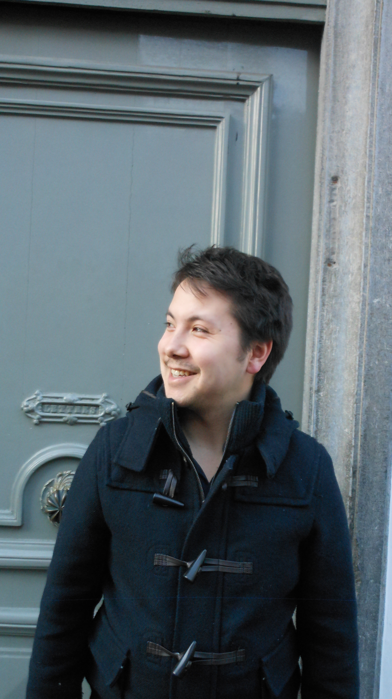

Wie ben ik ?

| Voornaam | Simon |
| Familienaam | Jang |
| Leeftijd | 27 jaar |
| Nationaliteit | Belg |
| Job | Bediende-Verkoper bij Dreamland |
Ik heb al sinds jongsaf een interesse voor computers en programmeren dit mede dankzij mijn vader die aan de slag is als IT consultant. Op jonge leeftijd kon ik al kennis maken met Windows 95 en DOS, alhoewel ik de PC toen voornamelijk zag als een toestel om games op te spelen.
Op mijn 12-jarige leeftijd had ik eindelijk iets nuttigs gevonden om te doen met de PC en maakte ik een website voor mijn moeder, die in haar vrije tijd les gaf. Ik heb zitten rondzoeken maar helaas heb ik er niets van teruggevonden. Het was dan ook niet meteen iets om heel trots te zijn maar het was voor mij toch een belangrijk moment omdat computers toch iets meer bleken te zijn dan enkel een 'spelletjesmachine'.
Na een turbulente studentenperiode, startte ik als verkoper bij Dreamland op de afdeling multimedia. Aangezien de meeste consoles en andere hardware geen geheimen meer voor mij hadden leek het vanzelfsprekend om die ook te gaan verkopen. Dit jaar heb ik echter beslist om terug te gaan studeren en door mijn affiniteit met IT, heb ik beslist om de opleiding Toegepaste Informatica te proberen.
Naast werken ben ik in mijn vrije tijd onlangs begonnen om de programeertaal Python te leren. Ik had een interessante blog gelezen waarbij een gamedesigner, door volledig autodidactisch te gaan leren, een game heeft kunnen ontwikkelen. Ik vond dat heel intrigerend en na wat googlen, kwam ik uit bij Python, als instaptaal om misschien een andere taal op termij te leren. Ik kijk dan ook reikhalzend uit naar de cursus Programmeren aan de Hogeschool.
Naast informatica, heb ik natuurlijk ook nog andere hobby's maar die kan je op mijn hobby pagina terugvinden.
Ik beschouw mezelf als sociaal en commerciëel ingesteld. Organisatorisch ben ik ook sterk, wat zeker belangrijk is in mijn huidige functie. Wekelijks moeten de zakencijfers worden geïnterpreteerd om zo bepaalde aanpassingen te kunnen doen in rayon opbouw en structuur. Daarnaast moet ik analytisch de verkoop op week- en maandbasis bekijken om zo de optimale stocks aan te passen en een meerverkoop te realiseren. Aangezien wij in kleine teams op rayonniveau en winkelniveau moeten samenwerken, ben ik ook een hechte teamspeler om zo de productiviteit en efficiëntie op te krikken. Deze skills zijn heel belangrijk voor mijn functie en gaan zeker ook nog een belangrijke rol spelen in mijn verdere carrière.